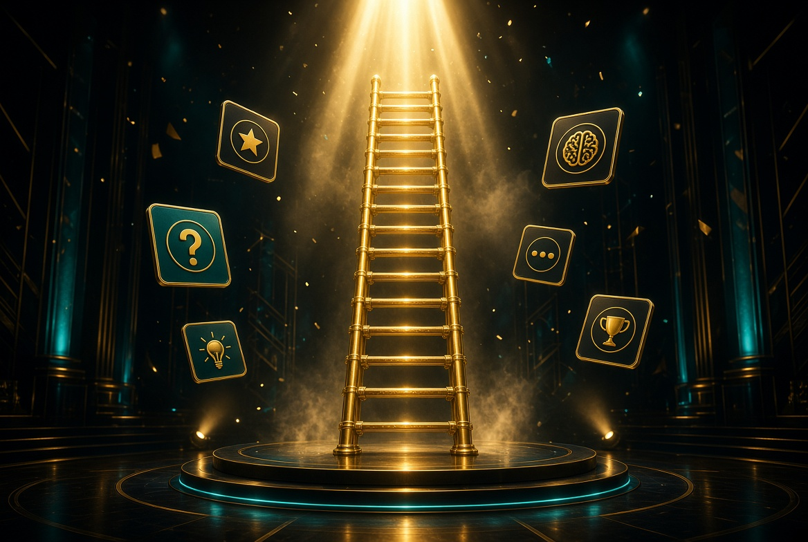

Climb
Questions get harder as you rise. Bands cover world, science, history, geography, and logic. A five-answer streak grants an extra rung.
100 rungs · no easy skip
A trivia climb built to take a long time. Every right answer moves you up one rung. Every miss drops you and costs a life. The skip button does nothing until you subscribe.

Questions get harder as you rise. Bands cover world, science, history, geography, and logic. A five-answer streak grants an extra rung.
A wrong answer or a timeout costs a life and drops you four rungs. The clock gets shorter near the top. Free players restart at rung 1.
Skip is on screen the whole time. It stays locked until Climber Pass. Subscribers get daily skips and a checkpoint every 20 rungs.
Quiz Ladder is a browser trivia game. The goal is to reach rung 100. It is meant to be long and hard to finish, not a 10-question quiz.
No. Free climbs have no skips. You subscribe to Climber Pass before the skip button will replace a question.
The main product is Climber Pass, a subscription for skips, an extra life, and checkpoints. After the site has traffic, display ads can run on the free climb only.
This build is ready to publish. Put it on GitHub, deploy it, buy the domain, and submit it to Google Search Console so a search for Quiz Ladder can surface it.